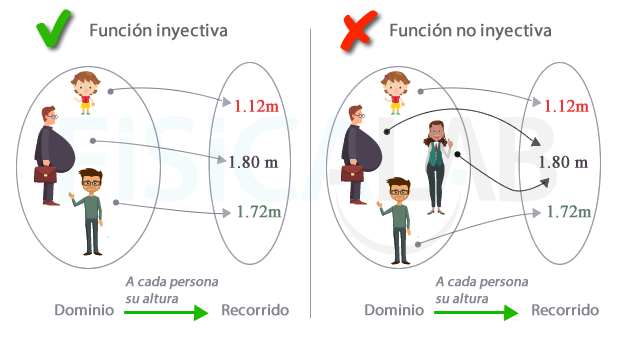

QUÉ ES UNA FUNCIÓN INYECTIVA
Una función es inyectiva cuando no hay dos elementos del dominio que tengan la misma imagen. Formalmente:
∀𝑎,𝑏∈𝐷𝑜𝑚𝑓 , si 𝑓𝑎= 𝑓𝑏⇒𝑎=𝑏
Es decir, para cada elemento del conjunto de llegada corresponde como máximo a un único elemento del conjunto de partida.

Inyectiva vs no inyectiva
A la izquierda, una función que asocia a cada persona su altura. A cada elemento del recorrido llega una sola flecha, por lo que la función es inyectiva. A la derecha, la función también asocia a cada persona su altura. En este caso el dominio es ligeramente distinto, y cuenta con una persona más que, curiosamente, tiene la misma altura que el oficinista que mide (1.80m).
Como a ese elemento del recorrido llegan dos flechas, la función ya no es inyectiva.
Por tanto, si te piden una demostración de que una función no es inyectiva, puedes hallar dos valores distintos del dominio cuyas imágenes sean iguales. Si las encuentras, la función no es inyectiva.
VEAMOS EN LA GRAFICA REAL
Cuando están dadas gráficamente se trata de buscar dos imágenes iguales en la misma. Observa la siguiente ilustración y lo entenderás más claramente:

Gráficas de funciones inyectivas
A la izquierda, una función real inyectiva, frente a una que no lo es, a la derecha. La prueba para determinar si una función real es inyectiva, a partir de su gráfica, consiste en buscar una recta horizontal que pueda cortar a la gráfica en más de un punto. Si la encuentras, como en el caso de la gráfica derecha, la función no es inyectiva. Si no existe ninguna recta así, como en el caso de la izquierda, la función es inyectiva. En cada gráfica se han utilizado dos rectas de prueba.
No debes confundir la prueba de la recta vertical, utilizada para saber si una gráfica corresponde a una función, con la prueba de la recta horizontal, utilizada para saber si una función es inyectiva.